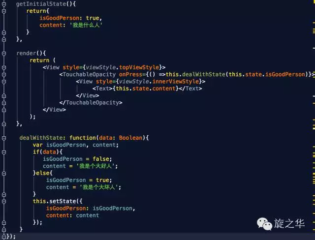

对于习惯了iOS开发的同学，可能会对React Native中组件的生命周期很困惑。在iOS中有一个ViewDidLoad来初始化，那么在RN中，又是在哪里呢？
看图分析
在下图中描述了React Native中组件的生命周期，我们可以根据其中的执行顺序在对应的函数中做对应的操作。

React Native组件的生命周期大致上可以划分为实例化阶段、存在阶段和销毁阶段，其中最常用的为实例化阶段，该阶段就是组件的构建、展示时期，需要我们根据几个函数的调用过程，控制好组件的展示和逻辑的处理。
实例化阶段函数功能分析
getDefaultProps
该函数用于初始化一些默认的属性，通常会将固定的内容放在这个函数 中进行初始化和赋值；
在组件中，可以利用this.props获取在这里初始化它的属性，由于组件初始化后，再次使用该组件不会调用getDefaultProps函数，所以组件自己不可以自己修改props（即：props可认为是只读的），只可由其他组件调用它时在外部修改。
getInitialState
该函数是用于对组件的一些状态进行初始化；
由于该函数不同于getDefaultProps，在以后的过程中，会再次调用，所以可以将控制控件的状态的一些变量放在这里初始化，如控件上显示的文字，可以通过this.state来获取值，通过this.setState来修改state值， 比如：
1 | this.setState({ |
注意：一旦调用了this.setState方法，组件一定会调用render方法，对组件进行再次的渲染，不过，如果React框架会自动根据DOM的状态来判断是否需要真正的渲染。
componentWillMount
相当于OC中的ViewWillAppear方法，在组件将要被加载在视图上之前调用，功能相对较少。
render
render是一个组件中必须有的方法，本质上是一个函数，并返回JSX或其他组件来构成DOM，和Android的XML布局类似，注意：只能返回一个顶级元素 ;
此外，在render函数中，只可通过this.state和this.props来访问在之前函数中初始化的数据值 。
componentDidMount
在调用了render方法后，组件加载成功并被成功渲染出来以后，所要执行的后续操作，一般会在这个函数中处理网络请求等加载数据的操作；
因为UI已经成功被渲染出来， 所以放在这个函数里进行请求操作，不会出现UI上的错误。
下图是利用了fetch API来异步请求Web API来加载数据：
存在期阶段函数功能分析
componentWillReceiveProps
指父元素对组件的props或state进行了修改
shouldComponentUpdate
一般用于优化，可以返回false或true来控制是否进行渲染
componentWillUpdate
组件刷新前调用，类似componentWillMount
componentDidUpdate
更新后的hook
销毁期阶段函数功能分析
用于清理一些无用的内容，如：点击事件Listener，只有一个过程：componentWillUnmount
常用知识点分析
this.state
开发中组件免不了要与用户互动，React 的一大创新，就是将组件看成是一个状态机，一开始有一个初始状态，然后用户互动，导致状态变化，从而触发重新渲染 UI。
举个例子：

当用户点击组件，导致状态变化，this.setState 方法就修改状态值，每次修改以后，自动调用 this.render 方法，再次渲染组件。
可以把组件看成一个“状态机”. 根据不同的status有不同的UI展示。只要使用setState改变状态值，根据diff算法算出来有差以后，就会执行ReactDom的render方法，重新渲染页面。
注意：由于 this.props 和 this.state 都用于描述组件的特性，可能会产生混淆。一个简单的区分方法是，this.props 表示那些一旦定义，就不再改变的特性，而 this.state 是会随着用户互动而产生变化的特性。
获取真实的DOM节点
在React Native中，组件并不是真实的 DOM 节点，而是存在于内存之中的一种数据结构，叫做虚拟 DOM （virtual DOM）。
只有当它插入文档以后，才会变成真实的 DOM 。
根据 React 的设计，所有的 DOM 变动，都先在虚拟 DOM 上发生，然后再将实际发生变动的部分，反映在真实 DOM上，这种算法叫做 DOM diff，它可以极大提高网页的性能表现。
但是，有时需要从组件获取真实 DOM 的节点，这时就要用到 ref 属性;
下图通过一个案例来演示：
运行结果如下：
上面代码中，组件 View 的子节点有一个文本输入框，用于获取用户的输入。这时就必须获取真实的 DOM 节点，虚拟 DOM 是拿不到用户输入的。为了做到这一点，文本输入框必须有一个 ref属性，然后 this.refs.[refName] 就会返回这个真实的 DOM 节点。
需要注意的是，由于 this.refs.[refName] 属性获取的是真实 DOM ，所以必须等到虚拟 DOM 插入文档以后，才能使用这个属性，否则会报错。上面代码中，通过为组件指定 Click 事件的回调函数，确保了只有等到真实 DOM 发生 Click 事件之后，才会读取 this.refs.[refName] 属性。
总结
React Native组件的生命周期，经历了Mount->Update->Unmount这三个大的过程，即从创建到销毁的过程，结合OC中的开发经验，我们在以上的基础上应该可以快速的上手React Native的开发。
引用
什么是DOM Diff算法
Web界面由DOM树来构成，当其中某一部分发生变化时，其实就是对应的某个DOM节点发生了变化。在React中，构建UI界面的思路是由当前状态决定界面。前后两个状态就对应两套界面，然后由React来比较两个界面的区别，这就需要对DOM树进行Diff算法分析。
即给定任意两棵树，找到最少的转换步骤。但是标准的的Diff算法复杂度需要O(n^3)，这显然无法满足性能要求。要达到每次界面都可以整体刷新界面的目的，势必需要对算法进行优化。这看上去非常有难度，然而Facebook工程师却做到了，他们结合Web界面的特点做出了两个简单的假设，使得Diff算法复杂度直接降低到O(n)
- 两个相同组件产生类似的DOM结构，不同的组件产生不同的DOM结构；
- 对于同一层次的一组子节点，它们可以通过唯一的id进行区分。
算法上的优化是React整个界面Render的基础，事实也证明这两个假设是合理而精确的，保证了整体界面构建的性能。
ES5和ES6的差异化？
es5，es6 都是对 ecmascript规范的补充，es5已经大规模使用了，es6目前可能在个别平台存在浏览器兼容性问题。
区别1：创建组件
组件是一个自定义的js对象，在es5中使用React.createClass()；在es6中必须继承React.component，然后进行创建。
ES5的写法：
ES6的写法：
区别2：组件的属性props
在ES6中，其为属性：defaultProps(可以标识static定义在class内，也可以定义在class外)，而在ES5中，其为方法：getDefaultProps: function(){return {name:value}};
ES5:
ES6:
区别3：组件的状态state
ES5:
ES6:
(本文转载自旋之华微信公众号)